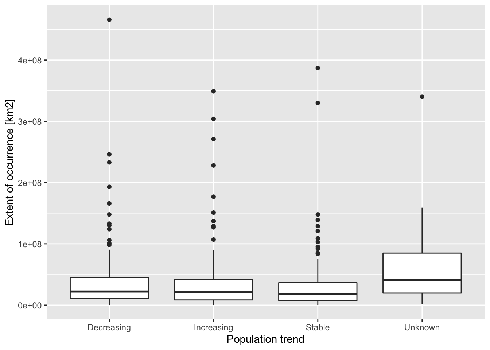
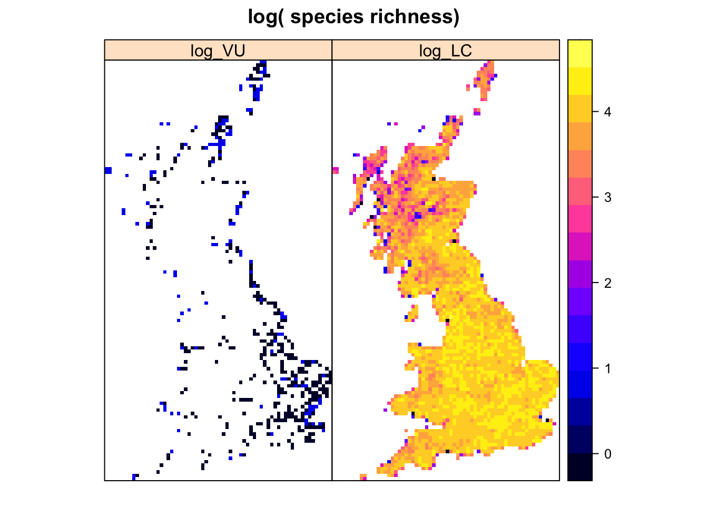
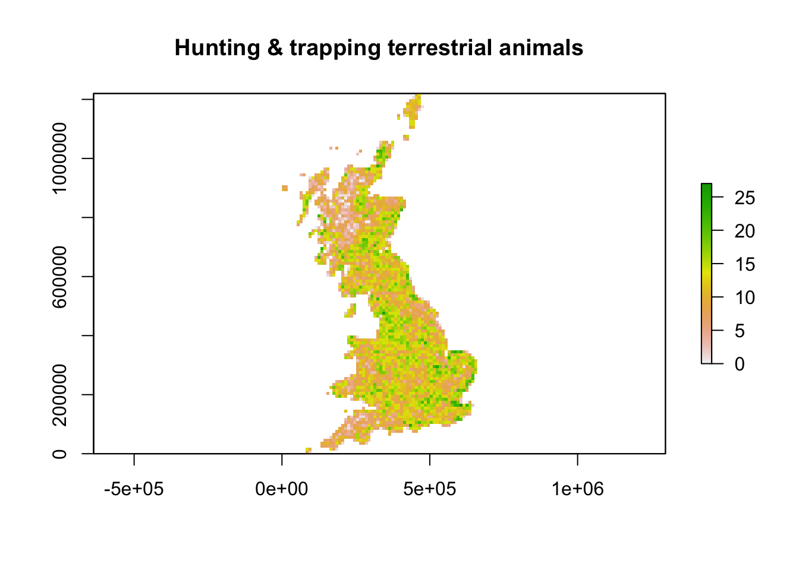
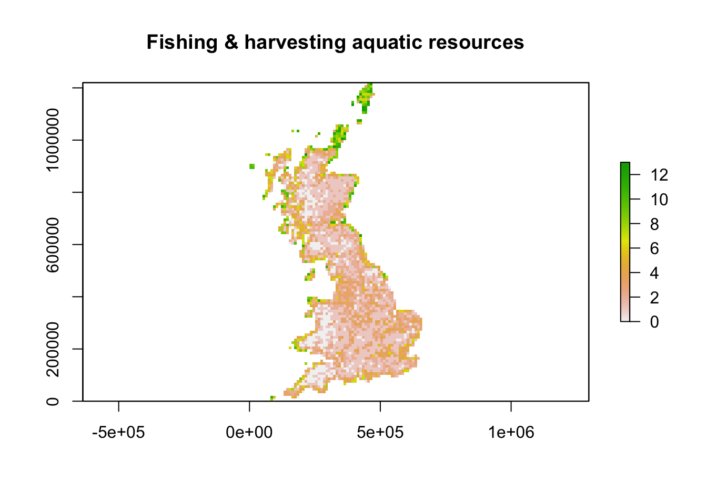

RStudio project
Open the RStudio project that we created in the first session. I recommend to use this RStudio project for the entire course and within the RStudio project create separate R scripts for each session.
# Session 5: Species threats and save the file in your folder “scripts” within your project folder, e.g. as “5_SpeciesThreats.R”The IUCN Red List of threatened species is a useful resource when analysing diversity changes, species range changes and population changes: www.iucnredlist.org (IUCN 2019). It provides information on the global conservation status of species, specifically of animals, fungi and plant species. The IUCN has defined a set of criteria to evaluate the extinction risk of species. According to these criteria, species are classified into nine different categories although strictly only five categories describe the conservation status - from least concern to critically endangered (Fig. 1; IUCN 2012).
Figure 1. The IUCN red list categories. Adapted from (IUCN 2012).
The IUCN distinguishes five criteria that are used to classify species into one of the three threatened categories (Fig. 1; IUCN (2012)):
All of these information (the red list category, the relevant assessment criteria, the population trends, etc.) are provided by the IUCN. We can look at all these information online, e.g. for the Balearic Shearwater.
Of course, if you want to analyse your species data in light of these IUCN assessments, it can become very tedious to look up all information by hand. The IUCN red list team provides an API for this purpose, and the R package rredlist is a client to access this IUCN red list API. It requires an API key / a token to use the API. You have to indicate your research objectives for using the API.
I have got permission to use some red list information for the UK breeding birds in class, but I am not allowed to post them. Thus, course participants can download the data (UK_birds_redlist_status.csv and UK_birds_redlist_threats.csv) in the secured moodle folder (but please be aware that the IUCN terms of use apply!). External readers are advised to generate an API token:
library(rredlist)
rl_use_iucn()We will with the UK breeding bird data from practical 3 available here. If not already done so, please download the data and save them in an appropriate folder (e.g. in data folder).
# Read in the distribution dataset:
bird_dist <- read.table('data/UK_BBatlas_2008.csv',header=T, sep=',', stringsAsFactors = F)
# Species names are contained in the columns:
spp <- names(bird_dist)[-c(1:3)]
# For later usage, we need to remove the underscore in the names:
spp <- sub('_',' ',spp)If you have your own IUCN API key, you can easily download the information on species’ red list categories:
# Download red list category for single species
(rl_search('Gavia stellata', key= MY_IUCN_REDLIST_KEY))## $name
## [1] "Gavia stellata"
##
## $result
## taxonid scientific_name kingdom phylum class order family genus
## 1 22697829 Gavia stellata ANIMALIA CHORDATA AVES GAVIIFORMES GAVIIDAE Gavia
## main_common_name authority published_year assessment_date category
## 1 Red-throated Loon (Pontoppidan, 1763) 2018 2018-08-07 LC
## criteria population_trend marine_system freshwater_system terrestrial_system
## 1 NA Decreasing TRUE TRUE TRUE
## assessor reviewer aoo_km2 eoo_km2 elevation_upper
## 1 BirdLife International Westrip, J.R.S. NA 59900000 500
## elevation_lower depth_upper depth_lower errata_flag errata_reason
## 1 NA NA NA NA NA
## amended_flag amended_reason
## 1 NA NA# Download red list categories for all species
redlist_status <- do.call(rbind,lapply(spp,FUN=function(sp){rl_search(sp, key= MY_IUCN_REDLIST_KEY)$result}))Course participants can download the data from moodle and read it in:
redlist_status <- read.table('data/UK_birds_redlist_status.csv', header=T, sep=',')Here is an example of the kind of information in the table. Compare this to the information given on the IUCN website, e.g. for the Balearic Shearwater.
redlist_status[1:10,10:20]## authority published_year assessment_date category
## 1 (Pontoppidan, 1763) 2018 2018-08-07 LC
## 2 (Linnaeus, 1758) 2018 2018-08-07 LC
## 3 (Brünnich, 1764) 2018 2018-08-07 LC
## 4 (Gray, 1859) 2018 2018-08-07 NT
## 5 (Linnaeus, 1758) 2016 2016-10-01 LC
## 6 (Pallas, 1764) 2017 2016-10-01 LC
## 7 (Linnaeus, 1758) 2018 2018-08-07 LC
## 8 (Boddaert, 1783) 2018 2018-08-07 LC
## 9 (Linnaeus, 1758) 2018 2018-08-07 VU
## 10 Brehm, 1831 2018 2018-08-07 LC
## criteria population_trend marine_system freshwater_system
## 1 <NA> Decreasing TRUE TRUE
## 2 <NA> Decreasing TRUE TRUE
## 3 <NA> Stable TRUE TRUE
## 4 <NA> Decreasing TRUE TRUE
## 5 <NA> Stable FALSE TRUE
## 6 <NA> Decreasing TRUE TRUE
## 7 <NA> Unknown TRUE TRUE
## 8 <NA> Decreasing TRUE TRUE
## 9 A2abce+3bce+4abce Decreasing TRUE TRUE
## 10 <NA> Unknown TRUE TRUE
## terrestrial_system assessor reviewer
## 1 TRUE BirdLife International Westrip, J.
## 2 TRUE BirdLife International Martin, R.
## 3 TRUE BirdLife International Westrip, J.
## 4 TRUE BirdLife International Westrip, J.
## 5 TRUE BirdLife International Butchart, S. & Symes, A.
## 6 TRUE BirdLife International Butchart, S. & Symes, A.
## 7 TRUE BirdLife International Westrip, J.
## 8 TRUE BirdLife International Westrip, J.
## 9 TRUE BirdLife International Westrip, J.
## 10 TRUE BirdLife International Hermes, C.Task 1:
Analyse IUCN population trends and range sizes:
Relate population trend to range sizes (extent of occurrence, EOO). The data are contained in the red list status data frame. You can also calculate British range sizes and use these for the analyses.
Are species with small ranges exhibting stronger population declines?

Task 2:
Map species richness for different red list categories:
Map species richness of all species belonging to a threatened category (CR, EN, VU) and of all species belonging to a non-threatened category (NT, LC). YOu find the relevant red list information in the data frame on the red list status. You have to combine this information with the distribution data.

The IUCN also assesses the main threats per species as you saw in the Balearic Shearwater example. The Threat Classification Scheme can be found here.
If you have your own IUCN API key, you can easily download the information on species’ red list threats:
# Download red list threats for single species
rl_threats('Gavia stellata', key= MY_IUCN_REDLIST_KEY)## $name
## [1] "Gavia stellata"
##
## $result
## code title timing
## 1 11.1 Habitat shifting & alteration Future
## 2 3.3 Renewable energy Ongoing
## 3 4.3 Shipping lanes Ongoing
## 4 5.4 Fishing & harvesting aquatic resources Ongoing
## 5 5.4.4 Unintentional effects: (large scale) [harvest] Ongoing
## 6 9.2 Industrial & military effluents Ongoing
## 7 9.2.1 Oil spills Ongoing
## scope severity score invasive
## 1 Majority (50-90%) Negligible declines Low Impact: 3 NA
## 2 Minority (<50%) Unknown Unknown NA
## 3 Minority (<50%) Negligible declines Low Impact: 4 NA
## 4 Minority (<50%) Negligible declines Low Impact: 4 NA
## 5 Minority (<50%) Negligible declines Low Impact: 4 NA
## 6 Minority (<50%) Slow, Significant Declines Low Impact: 5 NA
## 7 Minority (<50%) Slow, Significant Declines Low Impact: 5 NA# Download red list threats for all species
redlist_threats <- do.call(rbind,lapply(seq_len(length(spp)),FUN=function(i){xi <- rl_threats(spp[i], key= MY_IUCN_REDLIST_KEY); if(length(xi$result)) {data.frame(species=spp[i],speccode=speccodes[i],xi$result) }}))Course participants can download the data from moodle and read it in:
redlist_threats <- read.table('data/UK_birds_redlist_threats.csv', header=T, sep=',')The threats are ordered hierarchically from broad threat type to very detailed threat, e.g.:
Here is an example of the kind of information in the table. For more details, please have a look at the IUCN website, e.g. the Balearic Shearwater example, and at the Threat Classification Scheme.
redlist_threats[sample(nrow(redlist_threats),10),-c(1:2)]## code title timing
## 1199 5.4.4 Unintentional effects: (large scale) [harvest] Ongoing
## 753 2.1.3 Agro-industry farming Ongoing
## 245 5.1.2 Unintentional effects (species is not the target) Ongoing
## 1455 8.1.2 Named species (Cyathostoma bronchialis) Ongoing
## 77 8.1 Invasive non-native/alien species/diseases (Felis catus) Ongoing
## 100 9.6.1 Light pollution Ongoing
## 1062 5.1 Hunting & trapping terrestrial animals Ongoing
## 1155 6.1 Recreational activities Ongoing
## 168 5.1 Hunting & trapping terrestrial animals Ongoing
## 1041 7.3 Other ecosystem modifications Ongoing
## scope severity score
## 1199 Majority (50-90%) Slow, Significant Declines Medium Impact: 6
## 753 Majority (50-90%) Slow, Significant Declines Medium Impact: 6
## 245 Minority (<50%) Negligible declines Low Impact: 4
## 1455 Majority (50-90%) Negligible declines Low Impact: 5
## 77 Minority (<50%) Negligible declines Low Impact: 4
## 100 Minority (<50%) Negligible declines Low Impact: 4
## 1062 Minority (<50%) Slow, Significant Declines Low Impact: 5
## 1155 Minority (<50%) Negligible declines Low Impact: 4
## 168 Minority (<50%) Slow, Significant Declines Low Impact: 5
## 1041 Whole (>90%) Slow, Significant Declines Medium Impact: 7
## invasive
## 1199 <NA>
## 753 <NA>
## 245 <NA>
## 1455 Cyathostoma bronchialis
## 77 Felis catus
## 100 <NA>
## 1062 <NA>
## 1155 <NA>
## 168 <NA>
## 1041 <NA>Now, I would like you to analyse the frequency of different threats and the geographic patterns of threats.
Task 3:
Analyse major threat categories:
Discuss your results.
## [1] "Past"##
## Named species Viral/prion-induced diseases
## 6 6
## Agricultural & forestry effluents Droughts
## 2 2
## Herbicides and pesticides Housing & urban areas
## 1 1## [1] "Ongoing"##
## Hunting & trapping terrestrial animals
## 58
## Intentional use (species is the target)
## 35
## Industrial & military effluents
## 23
## Fishing & harvesting aquatic resources
## 21
## Renewable energy
## 21
## Unintentional effects: (large scale) [harvest]
## 21## [1] "Future"##
## Habitat shifting & alteration
## 24
## Named species
## 5
## Viral/prion-induced diseases
## 5
## Invasive non-native/alien species/diseases (Clostridium botulinum)
## 3
## Named species (Clostridium botulinum)
## 3
## Dams & water management/use
## 2## [1] "Declining species"##
## Hunting & trapping terrestrial animals Intentional use (species is the target)
## 28 18
## Annual & perennial non-timber crops Agro-industry farming
## 15 14
## Industrial & military effluents Recreational activities
## 12 11Task 4:
Map hotspots of threats:
Interpret.

IUCN. 2012. IUCN Red List Categories and Criteria: Version 3.1. Gland, Switzerland; Cambridge, UK: IUCN.
———. 2019. The IUCN Red List of Threatened Species. Version 2019-2. http://www.iucnredlist.org. Downloaded on 27 October 2019.